Inhalt |
Auf dem Spielfeld ist eine gewisse Anzahl von Minen versteckt, wenn man ein solches Feld öffnet ist das Spiel vorbei. Ziel ist es alle unverminten Felder so schnell wie möglich zu öffnen. Offene Felder geben einen Hinweis, wie viele der Nachbarzellen eine Mine enthalten. Durch Auswertung der offenen Felder können nun Schlußfolgerungen über andere Felder getroffen werden.
Die linke Maustaste ist zum öffnen, die rechte zum markieren von Feldern. Falls man auf ein geschlossenes Feld klickt, richtet sich die Aktion auf dieses Feld, ein Klick auf ein offenes Feld richtet sie auf alle ungeöffneten und nicht markierten Nachbarfelder (auch schnelles Öffnen oder Markieren genannt). Allerdings funktioniert das nur, falls genug Nachbarfelder offen bzw. markiert sind, sonst passiert nichts.
| Vorher | Aktion | Nachher | Kommentar |
|---|---|---|---|
| 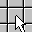 | 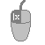 | 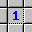 | öffnet ein Feld |
| 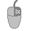 | 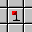 | Markierung eines Feldes | |
| 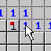 | 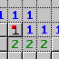 | Die eine Mine ist bereits gefunden -> alle anderen können geöffnet werden | |
| 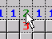 | 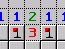 | Alle bis auf zwei Felder sind geöffnet -> restlichen Felder können markiert werden |
Die Schwierigkeit ein neues Feld zu finden, daß entweder geöffnet oder markiert werden kann, kann sehr stark variieren. Mines-Perfect unterscheide dabei drei Schwierigkeitsstufen. Bei der ersten Stufe kann man mit Hilfe von nur einem offenem Feld weiterkommen. Existiert ein solch offenes Feld, so kann mit diesem ein schnelles Markieren/Öffnen der Nachbarfelder durchgeführt werden. Bei der zweiten Stufe muss ich zwei, bei der dritten Stufe muss ich drei oder mehr offene Felder miteinander kombinieren. Der einfachste Zug auf dem Spielfeld ergibt dann die Gesamtschwierigkeitsstufe. Diese wird durch den Smiley angezeigt.
| Stufe | Smiley | Beispiel | Erklärung |
|---|---|---|---|
| 1 | 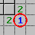 |
Der Zustand eines verdeckten Feldes kann durch die Auswertung eines einzelnen offenen Feldes bestimmt werden. In dem Beispiel muß das verdeckte Feld eine Mine enthalten, da es das einzige ungeöffnete Nachbarfeld ist, in dem die eine Mine des umkreisten Feldes noch liegen kann. |
|
| 2 | 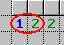 |
Der Zustand eines verdeckten Feldes kann durch die Auswertung von zwei offenen Feldern bestimmt werden. In dem Beispiel muß das dritte verdeckte Feld von links eine Mine enthalten, da in den drei linken Feldern zusammen zwei und in den beiden ganz links eine Mine liegen muss. |
|
| 3 | 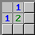 |
Es werden drei oder mehr offene Felder für die Bestimmung eines Feldzustandes benötigt. In dem Beispiel kann das Feld rechts unten keine Mine enthalten, da in den fünf verdeckten Feldern zwei Minen liegen, eine davon in den linken beiden und eine in den oberen beiden. |
|
| - | - |
Es ist keine Feldzustandsbestimmung mehr möglich. Weiteres Verhalten hängt vom Modus ab. Der linke Smiley erscheint im Immun- und im Lucky-, der rechte im Original-Modus. Im Hint- oder Startup-Modus gibt es diese Situation gar nicht. |
Der Kern des Programms enthält einen hoch optimierten Lösungsalgorithmus, der jedes Spiel lösen kann, falls es auch lösbar ist. Des weiteren wird dieser Algorithmus dazu verwendet, um Situationen in denen man nicht weiterkommen kann zu erkennen und entsprechend zu reagieren. Mit dem Modus bestimmt man, was in einer solchen Situation passieren soll:
Original-Modus: Wie beim Original-Spiel passiert in einer solchen Situation gar nichts und man latscht ohne Warnung auf die Mine.
Hint-Modus: Das Programm öffnet oder markiert ein Feld automatisch.
Immune-Modus: Der Spieler ist für den nächsten Schritt geschützt, d.h. beim Betreten einer Mine geht das Spiel weiter.
Lucky-Modus: Der Spieler wird im nächsten Schritt sehr viel 'Glück' haben und auf keine Mine treten. Das Programm hilft notfalls etwas nach und sortiert die Minen um (natürlich unter der Gewährleistung der Konsistenz. Dieser Modus und die Begrenzung der max. Schwierigkeitsstufe schliessen sich einander aus.).
Startup-Modus: Es werden vor Spielbeginn so viele Felder geöffnet und markiert, daß eine solche Situation gar nicht auftreten kann.
Für welchen Modus sich der Spieler entscheidet bleibt seinem persönlichem Geschmack überlasse. Es ist sogar möglich den Modus in einem laufenden Spiel zu ändern, was aber nicht immer Sinn macht. Wird z.B. vom Startup- in den Hint-Modus gewechselt, wird es nie einen Hinweis geben.
Es gibt noch eine Option die sich Murphy's Law nennt. Sie ist sozusagen das Gegenstück vom Lucky-Modus. Tritt der Spieler auf ein unvermintes Feld und es könnte theoretisch eine Mine darunter liegen, dann sorgt das Programm dafür, daß das dann auch so ist.
| File | Boards | Help |
| New | Ctrl+N | Neues Spiel beginnen. |
| Open | Ctrl+O | Ein gespeichertes Spiel laden |
| Save | Ctrl+S | Ein Spiel speichern |
| Beginner | . | Einfaches Spiel |
| Intermediate | . | Mittelschweres Spiel |
| Expert | . | Schweres Spiel |
| Selfdefined | . | Selbstdefiniertes Spiel |
| Original | . | Original-Modus setzen. |
| Hint | . | Hint-Modus setzen. |
| Immune | . | Immune-Modus setzen. |
| Lucky | . | Lucky-Modus setzen. |
| Start up | . | Start-up-Modus setzen. |
| Murphy's Law | . | Schaltet Murphy's Gesetz ein oder aus. |
| Best Times | . | Es werden die Bestzeiten angezeigt. Von hier aus können sie auch gelöscht oder in die globale Hiscoreliste eingetragen werden. |
| Exit | . | Programmende. |
| File | Boards | Help |
| File | Square | Board mit Quadraten. |
| File | Hexagon | Board mit Sechsecken. |
| File | Triangle | Board mit Dreiecken. |
| File | ... | und andere |
| File | Boards | Help |
| File | Boards | Hint | . | Ctrl+H | Bei Stufe eins und zwei werden das oder die offenen Felder angezeigt, mit denen Rückschlüsse auf geschlossene Felder gezogen werden können. Bei Stufe drei werden geschlossene Felder angezeigt, die geöffnet oder markiert werden können. |
| File | Boards | SolveOne | . | Ctrl+L | Öffnet oder markiert ein Feld. |
| File | Boards | SolveAll | Stage1,2,3 | Ctrl+1,2,3 | Löst alle Felder bis einschließlich der angegebenen Schwierigkeitsstufe. |
| File | Boards | SolveAuto | Stage0,1,2,3 | . | Löst alle Felder bis einschließlich der angegebenen Schwierigkeitsstufe nach jeder Aktion automatisch. |
| File | Boards | MaxStage | Stage1,2,3 | . | Die max. Schwierigkeitsstufe kann hier runter gesetzt werden. Hilfe durch den Modus wird dadurch früher gewährt (diese Einstellung und der Lucky-Modus schließen sich einander aus). |
| File | Boards | Show Mines | . | . | Macht Minen sichtbar bzw. unsichtbar. |
| File | Boards | Undo | . | Ctrl+Z | Der letzte Schritt wird rückgängig gemacht. Das kann etwas Zeit in Anspruch nehmen, da das komplette Spiel noch mal durchgespielt wird. |
| File | Boards | Redo | . | Ctrl+Y | Den letzte Schritt wiederholen. |
| File | Boards | Undo All | . | Shift+Ctrl+Z | Macht alle Schritte rückgängig bis zum Start des Spiels (ist dadurch schneller als Undo). |
| File | Boards | Content | . | . | Zeigt diese Hilfe an. |
| File | Boards | Homepage | . | . | Öffnet www.czeppi.de |
| File | Boards | About | . | . | Kurzinfo über das Spiel. |
Falls man bestimmte Ereignisse mit Geräuschen unterlegen möchte, kann man sich *.wav-Dateien mit einem bestimmtem Namen ins Mines-Perfect-Verzeichnis kopieren. Diese werden dann automatisch ausgeführt.
| Ereignis | Wave-Datei |
|---|---|
| Neues Spiel | new.wav |
| Feld aufgedeckt | open.wav |
| Feld markiert | flag.wav |
| Sackgassen-Situation erreicht (höhere Priorität als Öffnen oder Markieren) | deadend.wav |
| Spiel gewonnen | won.wav |
| Spiel verloren | lost.wav |
email: mail@czeppi.de
homepage: www.czeppi.de